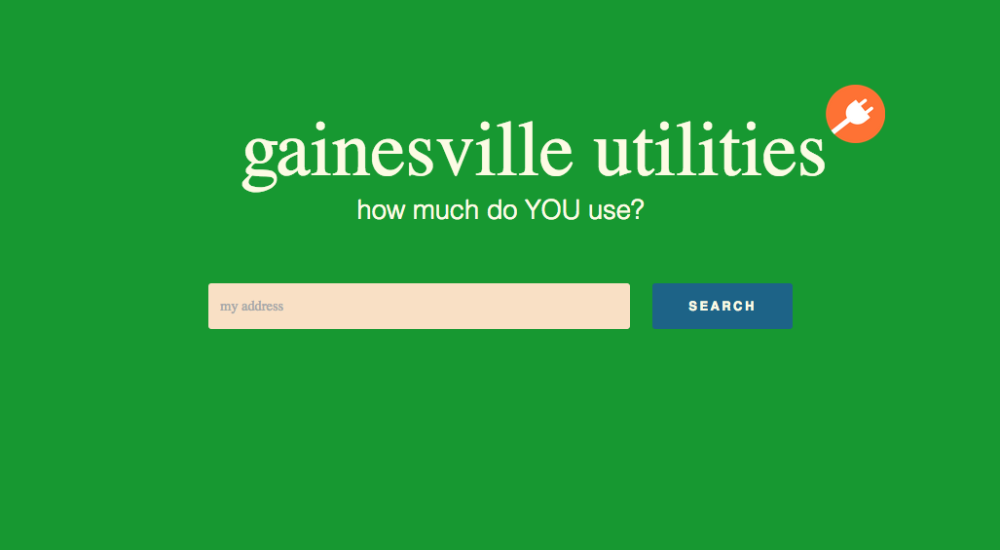
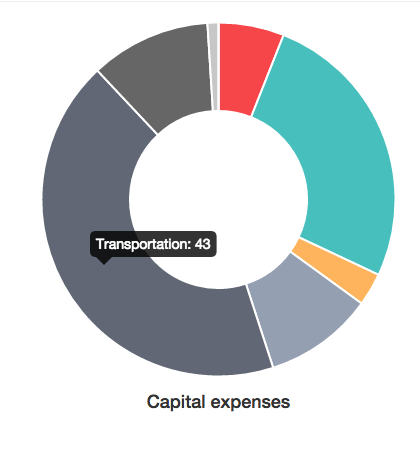

# table of contents
~ android
~ ios
# Web Coding
~ musicalendar: a room reservation system built for the university of florida's school of music
~ Gainesville Utilities Lookup: a referencing tool to organize utilities usage data from across the city
~ chuck edelstein photography: a portfolio website for a wildlife photographer in colorado.
(website is temporarily disabled, but you can find the code here.)

~ govobc: offers resources to local citizens before the 2014 gubernatorial debate at broward college. code here.

~ miami-dade budget visualizations: breaks down miami-dade county's budget in a more accessible format. code here.
~ eatable webapp: created the web app component to a gainesville startup, which provided 'smart' food recommendations
~ TwitterBot: Uses Twitter data to analyze how locals feel about taxi cabs. Read the code here.

# Android
~ simple to-do list -- 1 download (and counting!). code here.
~ scarface button -- 1,400 downloads. code here.
# iOS
# Python Scripts
~ jeopardy twitterbot -- a python application which holds over 1,700 jeopardy questions. it tweets a random question, and posts to wordpress with the answer. see its twitter feed here.
# Puzzles
~ hangman -- a project for my students to learn how to code basic methods in java. try and solve it!
# Web Content Management
~ gainesville harvest -- wordpress
~ miami localwiki -- localwiki
~ uf phi mu alpha -- wordpress
# nostalgia
~ racquetball -- html, css, javascript. (my first game.)